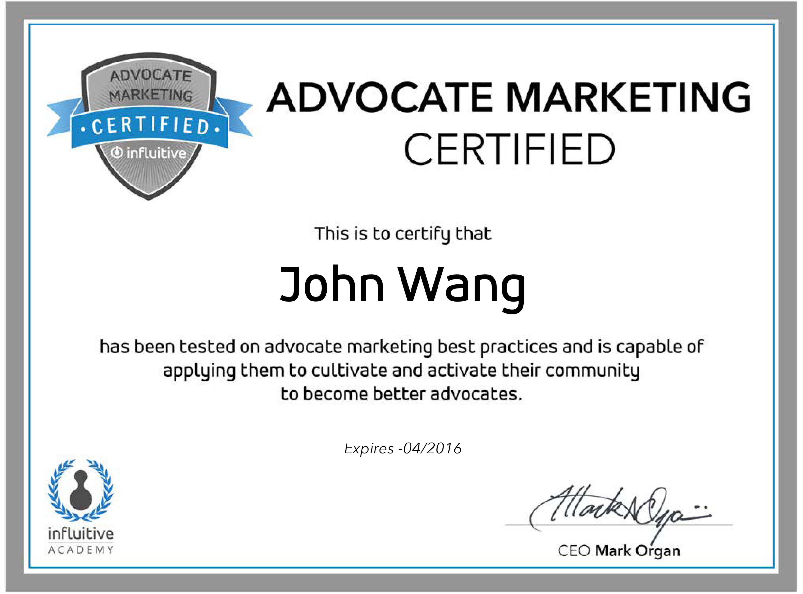
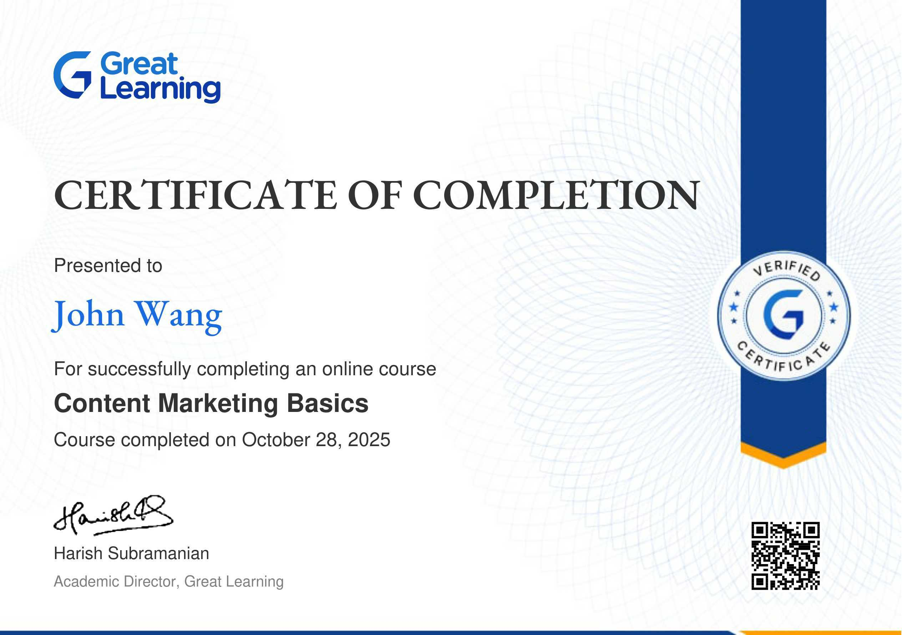
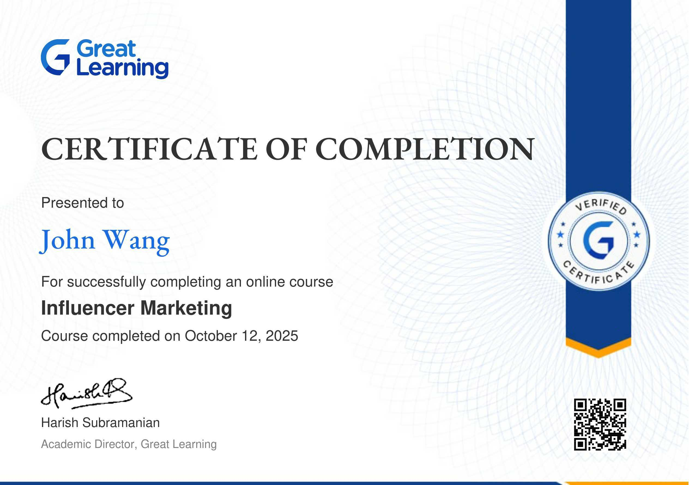
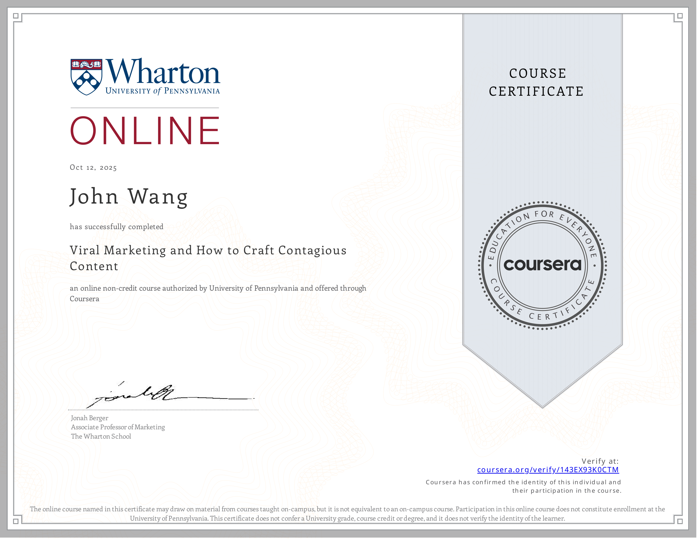

John's Marketing Certificates
- Advocate Marketing
- Content Marketing
- Influencer Marketing
- Viral Marketing
- Employer Branding
- Personal Branding
Advocate Marketing (1)
Advocate Marketing Certified from Influitive

Content Marketing (1)
Content Marketing Basics from Great Learning Academy by Prajwal Rao

Influencer Marketing (1)
Influencer Marketing from Great Learning Academy by Edwin Thomas

Viral Marketing (1)
Viral Marketing and How to Craft Contagious Content from University of Pennsylvania, Wharton School by Jonah Berger

Employer Branding (1)
World-Class Employer Branding: The Fundamentals from Udemy by Anj Vera

Personal Branding (2)
Become a Celebrity in Your Industry on LinkedIn from Udemy by Rachel Meuleman
Developing Your Personal Brand from Pluralsight by Jason Alba